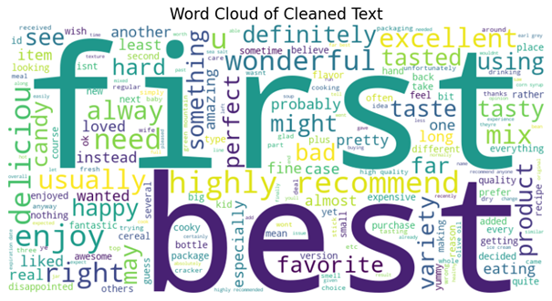
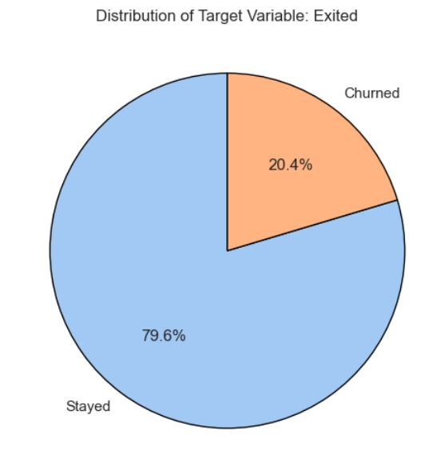

-
sentiment analysis of customer reviews
This project focuses on developing a machine learning model to classify Amazon reviews into sentiment categories: Positive, Neutral, and Negative.
Sentiment analysis plays a crucial role in helping businesses understand customer feedback, enabling them to address complaints and improve customer satisfaction.
The dataset consisted of over 500,000 reviews, which were preprocessed using techniques like text cleaning, lemmatization, and TF-IDF vectorization.
Due to the imbalanced class distribution, advanced techniques like SMOTE, undersampling, and SMOTE-ENN were explored to improve model performance.
Various models, including Logistic Regression, Random Forest, and XGBoost, were evaluated. Random Forest achieved the best overall performance,
although challenges with negative sentiment precision highlighted the difficulty of classifying subtle or ambiguous feedback.
This project demonstrates end-to-end data science skills, from preprocessing and modeling to addressing class imbalance.
Future improvements will focus on leveraging transformer-based models (e.g., BERT) for more nuanced sentiment analysis.

-
Employee Attrition Prediction in the IT sector
This project focuses on predicting employee attrition in the IT sector using machine learning. A synthetic dataset was designed to replicate real-world IT industry dynamics,
including responses to the Gallup Q12+ engagement questions, along with demographic and workplace metrics like age, tenure, salary, gender, and remote work percentages.
These variables were thoughtfully distributed based on research.
Logistic Regression was selected as the final model for its strong balance between interpretability and performance, achieving a recall of 90%. SHAP analysis revealed that
Q11 (whether an employee has received meaningful feedback about their progress in the past six months) plays a critical role in predicting attrition. Employees receiving such feedback
were significantly less likely to leave. Key Insight: Regular, meaningful feedback sessions represent a cost-effective and impactful strategy for HR teams to enhance employee satisfaction
and reduce turnover.
-
Customer Churn Prediction
This project focused on predicting customer churn using machine learning. Starting with thorough EDA, class imbalances were addressed through SMOTE and stratified sampling.
Three models—LightGBM, XGBoost, and KNN—were evaluated. LightGBM emerged as the top performer with nearly perfect precision, recall, and accuracy, making it the final choice for refinement.
The model was fine-tuned using GridSearchCV, and SHAP values provided insights into feature importance, identifying Age, Estimated Salary, and Customer Complaints as key factors driving churn.
The results provide actionable insights for businesses to identify at-risk customers and develop targeted retention strategies.

-
CO2 Emissions Analysis
This project utilized machine learning to support the automotive industry's goal of achieving 0 g CO₂/km for passenger cars and vans by 2035, as set by the EU.
The dataset, provided by the European Environment Agency, contains CO₂ emissions data for newly registered cars across 30 countries (2010–2023).
Initially over 16 GB, the data was streamlined through transformation and consolidation. Five machine learning models were evaluated to predict CO₂ emissions,
with Linear Regression (base model), XGBoost, and Dense Neural Networks advancing to the final stage. XGBoost demonstrated the best performance, achieving
the lowest MSE, highest R-squared, and strong robustness, all within a reasonable training time.